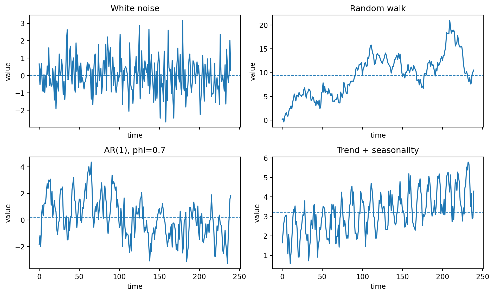
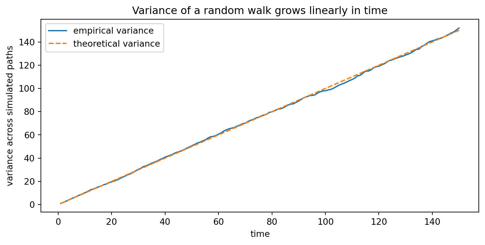
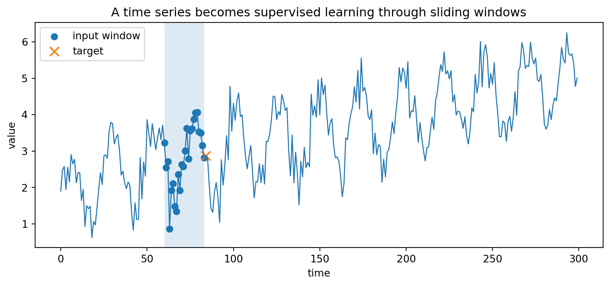
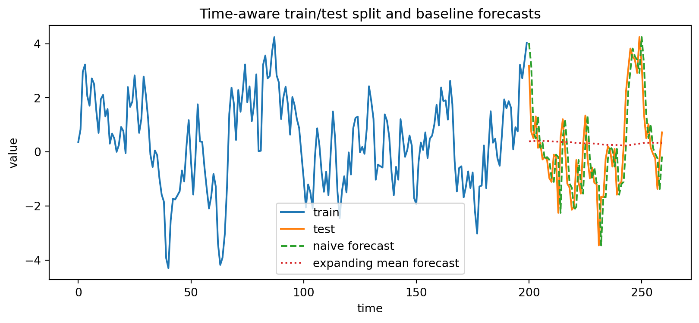

import numpy as np
import pandas as pd
import matplotlib.pyplot as plt
rng = np.random.default_rng(7339)
def simulate_white_noise(n=200, sigma=1.0, rng=rng):
return rng.normal(0.0, sigma, size=n)
def simulate_random_walk(n=200, sigma=1.0, rng=rng):
w = simulate_white_noise(n, sigma=sigma, rng=rng)
return np.cumsum(w)
def simulate_ar1(n=200, phi=0.7, sigma=1.0, burnin=100, rng=rng):
w = rng.normal(0.0, sigma, size=n + burnin)
x = np.zeros(n + burnin)
for t in range(1, n + burnin):
x[t] = phi * x[t-1] + w[t]
return x[burnin:]
def simulate_trend_seasonal(n=240, beta0=2.0, beta1=0.01, amplitude=1.0, period=12, sigma=0.4, rng=rng):
t = np.arange(n)
trend = beta0 + beta1 * t
seasonal = amplitude * np.sin(2 * np.pi * t / period)
noise = rng.normal(0.0, sigma, size=n)
return trend + seasonal + noise3 Why Time Series and Sequence Data Are Different
Part I. Time Series as Dependent Data
Chapter goal: understand time series as dependent observations, connect stochastic-process notation with forecasting, and build the first interactive and computational tools for simulation, visualization, and AI-assisted diagnosis.
3.1 Learning objectives
After studying this chapter, you should be able to:
- distinguish ordinary tabular data from time-indexed and ordered sequence data;
- define a stochastic process, a realization, white noise, a random walk, and a trend-plus-seasonal model;
- explain why dependence invalidates many independent-data habits, especially random train-test splitting;
- use second-order summaries such as mean, variance, covariance, and autocovariance as the first mathematical language for time series;
- simulate simple time-series models in Python and interpret their time plots;
- use an AI assistant productively by asking for assumptions, diagnostics, and verification steps rather than only asking for a forecast.
3.2 1.1 Motivation: data with memory
In a first course on machine learning, many data sets are introduced as rows in a table. A typical supervised-learning data set has the form
\[ \mathcal D = \{(x^{(i)},y^{(i)}): i=1,\dots,n\}, \]
where the index \(i\) often represents an unordered sample label. In many regression and classification models, we begin by pretending that the observations are independent and identically distributed. Time series and sequence data violate this starting point.
A time series is a sequence of observations collected in time order:
\[ x_1,x_2,\dots,x_n. \]
The order is not cosmetic. The value at time \(t\) may depend on values at earlier times. For example, tomorrow’s temperature depends on today’s weather; the current value of a stock index depends on past market conditions; traffic volume at 8:00 AM depends on the hour, the day of week, and recent congestion; a word in a sentence depends on previous words.
A sequence is a more general ordered object. Time series are usually numerical sequences indexed by time. Other sequence data include text, DNA, clickstreams, patient records, audio signals, and videos. In modern machine learning, the same conceptual questions appear repeatedly:
- What information from the past is useful?
- How far back should the model remember?
- Is the dependence linear, nonlinear, periodic, regime-switching, or long-range?
- Are we forecasting future values, classifying an entire sequence, detecting anomalies, or learning a representation?
This course develops the classical and modern answers side by side. Classical time-series models give interpretable probabilistic structure. Modern sequence models, including CNNs, RNNs, LSTMs, GRUs, attention, and transformers, learn flexible nonlinear representations. A mathematically trained applied student should understand both.
3.3 1.2 Stochastic-process notation
A time-series model begins with a collection of random variables indexed by time:
\[ \{X_t : t \in T\}. \]
This collection is called a stochastic process. The index set \(T\) may be continuous or discrete.
- If \(T\subseteq \mathbb R\), the process is a continuous-time stochastic process.
- If \(T\subseteq \mathbb Z\), the process is a discrete-time stochastic process.
In this book, most data are discrete-time and real-valued:
\[ X_1,X_2,\dots,X_n \in \mathbb R. \]
A single observed data set
\[ x_1,x_2,\dots,x_n \]
is called a realization or sample path of the stochastic process. This distinction matters. The model is random; the data set is one path generated from that model.
NoteModel versus realization
The model is \(\{X_t\}\), a sequence of random variables. The observed data are \(\{x_t\}\), one realized sequence. Time-series inference asks us to infer properties of the random process from one dependent path.
3.4 1.3 A time-series model is a joint distribution
A complete probabilistic model for \(X_1,\dots,X_n\) specifies the joint distribution
\[ P(X_1\le x_1, X_2\le x_2,\dots, X_n\le x_n) \]
for all \(x_1,\dots,x_n\). Equivalently, if a joint density exists, it specifies
\[ f_{X_1,\dots,X_n}(x_1,\dots,x_n). \]
For a long sequence, this full joint distribution is usually too complicated to model directly. Classical time-series analysis often begins with second-order structure:
\[ \mu_t = E[X_t], \]
\[ \gamma(s,t)=\operatorname{Cov}(X_s,X_t) =E[(X_s-\mu_s)(X_t-\mu_t)]. \]
The mean function \(\mu_t\) describes the average level at time \(t\). The covariance function \(\gamma(s,t)\) describes linear dependence between two times \(s\) and \(t\).
When the process is Gaussian, the mean function and covariance function determine all finite-dimensional distributions. Even when the process is not Gaussian, second-order structure gives a powerful first approximation and leads to ARMA, ARIMA, spectral analysis, filtering, and many forecasting methods.
3.5 1.4 Why dependence changes machine learning
Suppose we have observations \(x_1,\dots,x_n\) and want to predict \(x_{n+1}\). In independent-data problems, we often shuffle the data and split randomly into training and test sets. For time series, that can leak future information into the training set.
For forecasting, the correct information set at time \(n\) is the past and present:
\[ \mathcal F_n = \sigma(X_1,\dots,X_n), \]
where \(\sigma(X_1,\dots,X_n)\) denotes the information generated by the observations up to time \(n\). A forecast should use information available at forecast time, not information from the future.
The ideal mean-square-error forecast is the conditional expectation
\[ \widehat X_{n+h|n}=E[X_{n+h}\mid X_1,\dots,X_n], \]
where \(h\ge 1\) is the forecast horizon. This equation is one of the central principles of the course: forecasting is conditional prediction under time-order constraints.
WarningCommon leakage mistake
A random train-test split can put observations from the future into the training set and observations from the past into the test set. This may produce an unrealistically good test error. For forecasting, validation must respect time order.
3.6 1.5 Basic examples
3.6.1 White noise
A process \(\{W_t\}\) is called white noise with mean \(0\) and variance \(\sigma^2\) if
\[ E[W_t]=0, \]
\[ \operatorname{Var}(W_t)=\sigma^2, \]
and
\[ \operatorname{Cov}(W_s,W_t)=0 \qquad \text{for } s\ne t. \]
We write
\[ W_t\sim WN(0,\sigma^2). \]
White noise is uncorrelated over time. It is not necessarily independent. If the \(W_t\) are independent and identically distributed, then we call the process i.i.d. white noise. If, in addition,
\[ W_t\sim N(0,\sigma^2), \]
then we call it Gaussian white noise.
White noise is important for two reasons. First, many models are constructed by filtering white noise. Second, residuals from a successful time-series model should often look like white noise.
3.6.2 Binary i.i.d. process
A simple discrete-state example is
\[ P(X_t=1)=p, \qquad P(X_t=-1)=1-p. \]
When \(p=1/2\), the process flips between \(1\) and \(-1\) with equal probability. It has no useful memory for forecasting if the variables are independent:
\[ P(X_{t+1}\le x\mid X_1,\dots,X_t)=P(X_{t+1}\le x). \]
3.6.3 Random walk
Let \(W_1,W_2,\dots\) be i.i.d. noise. The process
\[ S_t = \sum_{i=1}^t W_i \]
is a random walk. Equivalently,
\[ S_t=S_{t-1}+W_t. \]
The first difference of a random walk is the noise process:
\[ \nabla S_t = S_t-S_{t-1}=W_t. \]
If \(E[W_t]=0\) and \(\operatorname{Var}(W_t)=\sigma^2\), then
\[ E[S_t]=0, \]
and
\[ \operatorname{Var}(S_t)=t\sigma^2. \]
The variance grows with time, so the random walk is not stable around a fixed level. This is a first example of a nonstationary process. Its differences, however, are stationary white noise.
3.6.4 Trend-plus-seasonality model
Many observed time series contain a long-run trend, repeating seasonal components, and random noise. A useful starting model is
\[ X_t=T_t+S_t+E_t, \]
where \(T_t\) is trend, \(S_t\) is seasonality, and \(E_t\) is residual noise. For example,
\[ X_t = \beta_0+\beta_1 t +\sum_{j=1}^m \left[a_j\cos(2\pi \omega_j t)+b_j\sin(2\pi \omega_j t)\right] +E_t. \]
This decomposition anticipates several later chapters. Detrending and differencing help remove \(T_t\). Fourier and spectral methods help analyze \(S_t\). ARMA and neural models help represent dependence in \(E_t\).
3.7 1.6 Time-domain, frequency-domain, and sequence-learning views
There are three complementary views that will appear throughout the book.
3.7.1 Time-domain view
The time-domain approach models the current value using past values and past shocks. A simple example is the autoregressive model
\[ X_t=\phi X_{t-1}+W_t. \]
The central question is: how does the process move forward in time?
3.7.2 Frequency-domain view
The frequency-domain approach decomposes variation into oscillations. A simple periodic component is
\[ A\cos(2\pi \omega t+\varphi), \]
where \(A\) is amplitude, \(\omega\) is frequency, and \(\varphi\) is phase. The central question is: which frequencies explain the variation?
3.7.3 Sequence-learning view
Modern sequence models learn a function from an input sequence to a target:
\[ (x_{t-L+1},\dots,x_t) \mapsto y_t. \]
For forecasting, a common supervised-learning construction is
\[ (x_{t-L+1},\dots,x_t) \mapsto x_{t+h}, \]
where \(L\) is the lookback window and \(h\) is the forecast horizon. Deep learning replaces handcrafted dependence assumptions with learned nonlinear transformations.
3.8 1.7 Interactive demonstration: first process simulator
The interactive below lets you compare simple models. Change the model, sample size, and parameters. Look at both the time plot and the sample autocorrelation plot.
TipHow to use this widget
White noise should look irregular with almost no autocorrelation after lag zero. A random walk should wander and usually show strong persistence. AR(1) behavior changes dramatically as \(\phi\) moves from negative to positive. MA(1) usually has short memory. Trend-plus-seasonality has visible deterministic structure.
This chapter assumes Plotly.js is loaded once globally from assets/header.html. The chapter itself does not load Plotly again.
3.9 1.8 Python example: simulate the basic processes
The next code chunk creates a reusable simulator. It is intentionally written in plain NumPy so that the model equations remain visible.
We can now compare four sample paths.
Code
n = 240
series = {
"White noise": simulate_white_noise(n),
"Random walk": simulate_random_walk(n),
"AR(1), phi=0.7": simulate_ar1(n, phi=0.7),
"Trend + seasonality": simulate_trend_seasonal(n),
}
fig, axes = plt.subplots(2, 2, figsize=(10, 6), sharex=True)
axes = axes.ravel()
for ax, (name, x) in zip(axes, series.items()):
ax.plot(x)
ax.set_title(name)
ax.axhline(np.mean(x), linestyle="--", linewidth=1)
ax.set_xlabel("time")
ax.set_ylabel("value")
plt.tight_layout()
plt.show()
NoteWhat to notice
A random walk may look like a trend even when its increments have mean zero. This is one reason that visual trend detection must be paired with mathematical diagnostics.
3.10 1.9 Python example: empirical mean and variance over time
For a random walk \(S_t=\sum_{i=1}^t W_i\), theory says \(E[S_t]=0\) and \(\operatorname{Var}(S_t)=t\sigma^2\). We can check this by simulating many paths.
Code
n_paths = 2000
n_steps = 150
sigma = 1.0
walks = np.vstack([simulate_random_walk(n_steps, sigma=sigma, rng=rng) for _ in range(n_paths)])
empirical_mean = walks.mean(axis=0)
empirical_var = walks.var(axis=0)
t = np.arange(1, n_steps + 1)
df_moments = pd.DataFrame({
"time": t,
"empirical_mean": empirical_mean,
"empirical_variance": empirical_var,
"theoretical_variance": t * sigma**2,
})
df_moments.head()| time | empirical_mean | empirical_variance | theoretical_variance | |
|---|---|---|---|---|
| 0 | 1 | 0.022169 | 1.015279 | 1.0 |
| 1 | 2 | -0.016335 | 2.007345 | 2.0 |
| 2 | 3 | -0.028065 | 3.004240 | 3.0 |
| 3 | 4 | -0.031805 | 4.059932 | 4.0 |
| 4 | 5 | -0.041788 | 5.146741 | 5.0 |
Code
plt.figure(figsize=(9, 4))
plt.plot(df_moments["time"], df_moments["empirical_variance"], label="empirical variance")
plt.plot(df_moments["time"], df_moments["theoretical_variance"], linestyle="--", label="theoretical variance")
plt.xlabel("time")
plt.ylabel("variance across simulated paths")
plt.title("Variance of a random walk grows linearly in time")
plt.legend()
plt.show()
This growth of variance is an early warning sign of nonstationarity. Later, we will formalize stationarity and use differencing to transform some nonstationary processes into stationary ones.
3.11 1.10 Python example: sequence windows for machine learning
Deep-learning models usually do not ingest a full scalar time series as a single object. We first create windows. For a lookback length \(L\) and horizon \(h\), define
\[ X^{(i)} = (x_i,x_{i+1},\dots,x_{i+L-1}), \]
and
\[ y^{(i)} = x_{i+L+h-1}. \]
This converts one sequence into a supervised-learning data set.
Code
def make_windows(x, lookback=24, horizon=1):
x = np.asarray(x, dtype=float)
X, y = [], []
last_start = len(x) - lookback - horizon + 1
for start in range(last_start):
X.append(x[start:start + lookback])
y.append(x[start + lookback + horizon - 1])
return np.array(X), np.array(y)
x = simulate_trend_seasonal(n=300, period=24)
X, y = make_windows(x, lookback=24, horizon=1)
X.shape, y.shape((276, 24), (276,))Code
lookback = 24
horizon = 1
start = 60
plt.figure(figsize=(10, 4))
plt.plot(x, linewidth=1)
plt.scatter(np.arange(start, start + lookback), x[start:start + lookback], label="input window")
plt.scatter([start + lookback + horizon - 1], [x[start + lookback + horizon - 1]], marker="x", s=80, label="target")
plt.axvspan(start, start + lookback - 1, alpha=0.15)
plt.title("A time series becomes supervised learning through sliding windows")
plt.xlabel("time")
plt.ylabel("value")
plt.legend()
plt.show()
ImportantWindowing does not remove dependence
The rows of the windowed matrix \(X\) are highly overlapping. Treating them as independent rows can mislead uncertainty estimates and validation results. The validation split still needs to respect time order.
3.12 1.11 A first baseline forecast
Before using ARIMA, Prophet, LSTM, or transformers, always build simple baselines. Two basic baselines are:
- Naive forecast: \(\widehat x_{t+1}=x_t\).
- Mean forecast: \(\widehat x_{t+1}=\bar x_{1:t}\).
For many real data sets, a sophisticated model is not useful unless it beats these simple baselines under a time-aware validation scheme.
Code
x = simulate_ar1(n=260, phi=0.8)
train_size = 200
train = x[:train_size]
test = x[train_size:]
# One-step naive forecast on the test period: previous observed value.
naive_forecast = x[train_size-1:-1]
# Expanding mean forecast.
history = list(train)
mean_forecast = []
for obs in test:
mean_forecast.append(np.mean(history))
history.append(obs)
mean_forecast = np.array(mean_forecast)
def rmse(actual, pred):
return float(np.sqrt(np.mean((actual - pred)**2)))
print("Naive RMSE:", rmse(test, naive_forecast))
print("Mean RMSE:", rmse(test, mean_forecast))
plt.figure(figsize=(10, 4))
plt.plot(np.arange(train_size), train, label="train")
plt.plot(np.arange(train_size, len(x)), test, label="test")
plt.plot(np.arange(train_size, len(x)), naive_forecast, linestyle="--", label="naive forecast")
plt.plot(np.arange(train_size, len(x)), mean_forecast, linestyle=":", label="expanding mean forecast")
plt.xlabel("time")
plt.ylabel("value")
plt.title("Time-aware train/test split and baseline forecasts")
plt.legend()
plt.show()Naive RMSE: 1.0941083318954319
Mean RMSE: 1.6574298880036455
3.13 1.12 AI-assisted study: use AI as a model critic
AI tools are useful in this course, but only when the interaction is structured. For time series, a generic request such as “forecast this data” is usually too vague. A better request forces the assistant to state assumptions and diagnostics.
3.14 AI-assisted modeling prompt
Use the following prompt after you have a time plot and basic summary statistics.
I have a univariate time series observed at equally spaced times. I need to forecast the next \(h\) values. First, list plausible data-generating structures: white noise, random walk, trend-plus-noise, seasonality, ARMA dependence, changing variance, or regime switching. For each structure, tell me one visual diagnostic, one mathematical assumption, one simple baseline forecast, and one way the model could fail. Do not choose a final model until I provide a time plot, ACF, validation design, and residual diagnostics.
WarningWhat not to outsource
Do not let AI decide the validation design without checking it. Do not accept a model only because it gives code. In this class, every AI-generated suggestion must be checked against mathematical assumptions and out-of-sample performance.
3.15 1.13 Mathematical summary
Here are the core objects from the chapter.
| Concept | Mathematical form | Interpretation |
|---|---|---|
| Stochastic process | \(\{X_t:t\in T\}\) | Random variables indexed by time or order |
| Realization | \(x_1,\dots,x_n\) | One observed sample path |
| Mean function | \(\mu_t=E[X_t]\) | Average level at time \(t\) |
| Covariance function | \(\gamma(s,t)=\operatorname{Cov}(X_s,X_t)\) | Linear dependence between two times |
| White noise | \(W_t\sim WN(0,\sigma^2)\) | Uncorrelated zero-mean shocks |
| Random walk | \(S_t=S_{t-1}+W_t\) | Accumulated shocks; nonstationary level |
| Difference | \(\nabla S_t=S_t-S_{t-1}\) | Change from one time to the next |
| Forecast | \(\widehat X_{n+h|n}=E[X_{n+h}\mid X_1,\dots,X_n]\) | Best mean-square prediction under the model |
| Windowed input | \((x_{t-L+1},\dots,x_t)\) | Sequence input for ML models |
3.16 1.14 Common mistakes
- Ignoring order. A time series is not a bag of observations.
- Using random splits for forecasting. This leaks future information.
- Confusing uncorrelated with independent. White noise is uncorrelated; i.i.d. noise is stronger.
- Calling every upward path a deterministic trend. A random walk can visually drift.
- Using a deep model before a baseline. A neural model should be compared against naive, seasonal naive, and simple statistical models.
- Trusting a forecast without uncertainty. Forecasts need error measures and, when possible, prediction intervals.
- Asking AI for answers instead of assumptions. Use AI to generate hypotheses and checks, not as a substitute for diagnostics.
3.17 1.15 Exercises
3.17.1 Conceptual exercises
- Explain the difference between a stochastic process and a realization.
- Give one example of discrete-time continuous-state data and one example of discrete-time discrete-state data.
- Why is i.i.d. white noise usually uninteresting for forecasting future values?
- Let \(S_t=\sum_{i=1}^t W_i\), where \(W_i\) are independent with mean \(0\) and variance \(\sigma^2\). Derive \(E[S_t]\) and \(\operatorname{Var}(S_t)\).
- Suppose \(X_t=\beta_0+\beta_1t+E_t\). Compute \(\nabla X_t=X_t-X_{t-1}\).
3.17.2 Computational exercises
- Simulate 100 realizations of white noise and 100 realizations of a random walk. Compare the distribution of \(X_{100}\) in both cases.
- Write your own function to compute the first difference of a sequence.
- Create a time-aware train/test split for a simulated AR(1) series. Compare naive and mean forecasts.
- Use the windowing function to create input-output pairs for lookback lengths \(L=6,12,24\). How does the number of training examples change?
- Create a trend-plus-seasonal sequence. Try a random train-test split and a time-ordered split. Explain why the random split is misleading.
3.17.3 AI-assisted exercise
Ask an AI assistant to propose three possible models for a simulated series from this chapter. Then write a verification report with four parts:
- the AI’s proposed model;
- the assumption behind that model;
- the diagnostic plot or statistic you used to check the assumption;
- whether you accept, reject, or modify the suggestion.
3.18 1.16 Chapter checklist
Before moving to Chapter 2, make sure you can do the following without notes:
- define \(\{X_t\}\) and \(\{x_t\}\);
- explain why dependence matters for forecasting;
- simulate white noise and a random walk;
- derive the variance of a random walk;
- create supervised-learning windows from a sequence;
- explain why random splitting is usually inappropriate for forecasting;
- write an AI prompt that asks for assumptions and diagnostics.
3.19 Further reading
Classical notation and introductory examples are covered in [1] and [2]. Forecasting validation and baseline thinking are developed in [3]. Later chapters connect these ideas to neural sequence modeling and modern AI systems.
[1] R.H. Shumway, D.S. Stoffer. “Time series analysis and its applications: With r examples.” 2017
[2] P.J. Brockwell, R.A. Davis. “Introduction to time series and forecasting.” 2016
[3] R.J. Hyndman, G. Athanasopoulos. “Forecasting: Principles and practice.” 2021